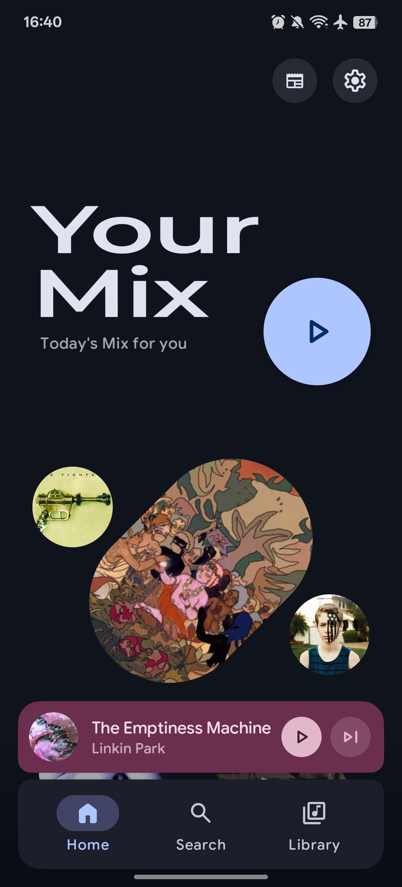
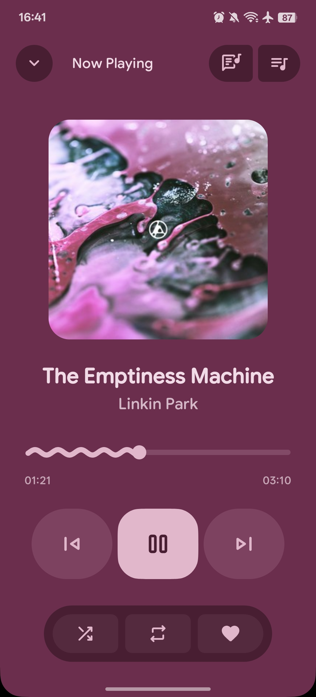
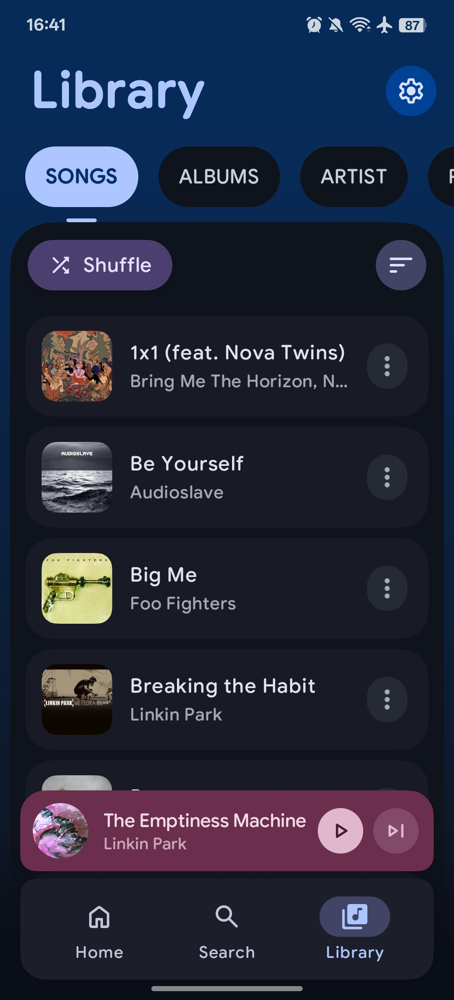
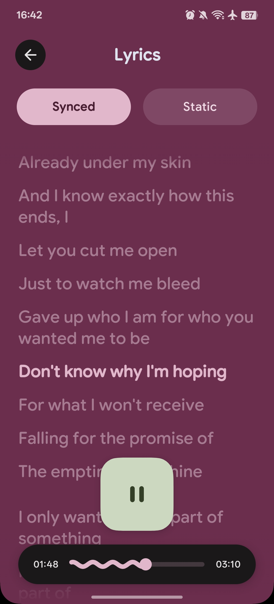

绚丽背景
把封面纹理揉进双三次 Hermite 网格，随时间缓慢旋转、跟低频鼓点呼吸。深色模式下你看到的这个页面背景，就是同一套算法。
Android · Jetpack Compose · Material 3
一款美观且功能丰富的 Android 音乐播放器。 从 Hi-Res 原生解码到云端流媒体，从逐字歌词到 AI 歌单 —— 把专业的音乐体验，装进一个精心打磨的界面。
向下滚动
播放、解码、歌词、云端、AI —— 每一块都按能长期每天使用的标准来做。
把封面纹理揉进双三次 Hermite 网格，随时间缓慢旋转、跟低频鼓点呼吸。深色模式下你看到的这个页面背景，就是同一套算法。
Media3 ExoPlayer + FFmpeg，配合经 JNI 接入的 miniaudio。原生播放 DSD64 / DFF，支持外置 USB DAC 与 ReplayGain 音量归一化。
网易云、AMLL、LRCLIB 多源可配优先级，日语罗马音引擎按需下载；可拖拽、可贴边收起的悬浮歌词，支持翻译与本地歌词。
完整的 Gapless 曲目间平滑过渡，交叉淡入淡出时长可自定义 —— 古典与 DJ 专辑里，这一条比什么都重要。
QQ 音乐、网易云、酷狗、Bilibili、Jellyfin、Navidrome、Telegram、Google Drive —— 统一收敛成同一个媒体库和同一条播放队列。
AI 歌单生成、元数据补全、播放列表质量评分。Gemini、DeepSeek、OpenAI、Groq、OpenRouter 都能接，并统计 token 花费。
按歌曲、专辑、艺术家、流派、文件夹与播放列表浏览；智能解析多艺术家，TagLib / Jaudiotagger 直接改写标签。
完整参数化 EQ，自动读取耳机内参曲线生成补偿预设，另有摇滚、流行、古典等风格预设与自定义方案。
Chromecast 推流、Android Auto、车机、Glance 桌面小组件与 Wear OS 手表；内置 Ktor 服务，浏览器打开网页即可遥控。
本地文件与在线服务并存，搜索、收藏、歌单与下载走同一套交互。
面向发烧友的解码链路，配上不折腾的日常体验。
拖动可以旋转 —— 四个界面，四种场景。




← 拖动旋转 →